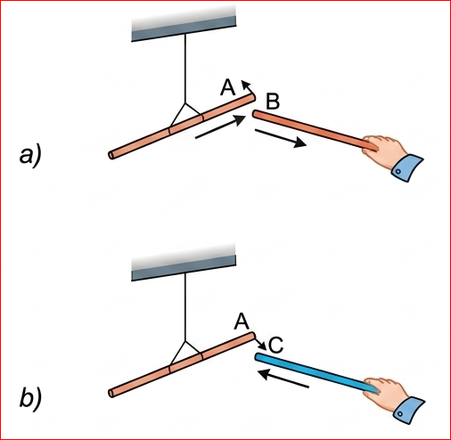
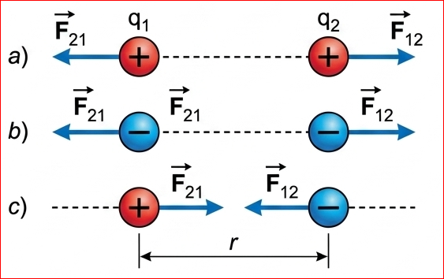
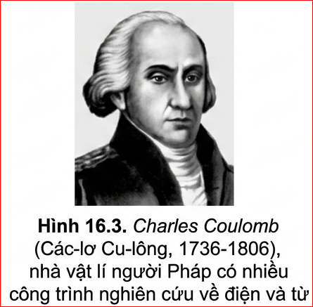
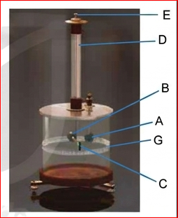
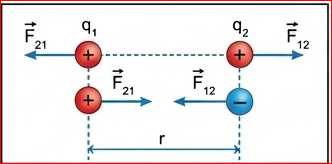
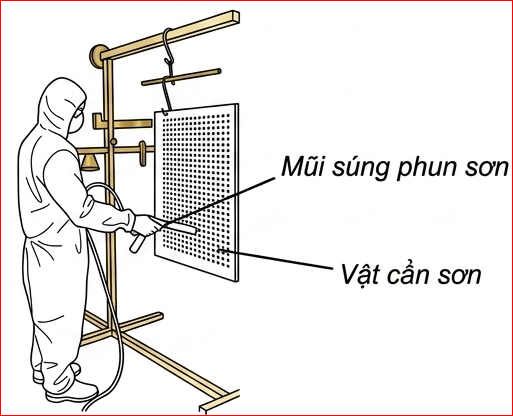

CHƯƠNG III – ĐIỆN TRƯỜNG
BÀI 16: LỰC TƯƠNG TÁC GIỮA HAI ĐIỆN TÍCH
I. LỰC HÚT VÀ LỰC ĐẨY GIỮA CÁC ĐIỆN TÍCH

Hình 16.1. Sự hút, đẩy của các điện tích
✋ Hoạt động 1
Treo thanh nhựa A bằng một dây chỉ để nó có thể quay tự do rồi dùng len cọ xát một đầu của nó. Quan sát, mô tả và giải thích hiện tượng xảy ra khi:
- a) Dùng len cọ xát một đầu thanh nhựa B rồi đưa lại gần đầu đã được cọ xát của thanh nhựa A (Hình 16.1a).
- b) Dùng lụa cọ xát một đầu thanh thuỷ tinh C rồi đưa lại gần đầu đã được cọ xát của thanh nhựa A (Hình 16.1b).
Hướng dẫn:
a) Thanh nhựa A và thanh nhựa B đều được cọ xát bằng len nên chúng nhiễm điện cùng loại (điện tích âm). Do đó, chúng đẩy nhau. Thanh A sẽ quay ra xa thanh B.
b) Thanh thuỷ tinh C cọ xát bằng lụa mang điện tích dương, thanh nhựa A cọ xát bằng len mang điện tích âm. Hai thanh nhiễm điện trái dấu nên hút nhau. Thanh A sẽ quay lại gần thanh C.

Hình 16.2. Lực tương tác giữa hai điện tích
✋ Hoạt động 2
Dựa vào Hình 16.2a, vẽ các vectơ lực biểu diễn tương tác giữa các điện tích trong các hình còn lại (Hình 16.2 b, c).
Hướng dẫn:
- Hình 16.2b: Hai điện tích âm đẩy nhau. Các vectơ lực có gốc đặt tại mỗi điện tích, phương trùng với đường nối hai điện tích, chiều hướng ra xa nhau.
- Hình 16.2c: Một điện tích dương và một điện tích âm hút nhau. Các vectơ lực có gốc đặt tại mỗi điện tích, phương trùng với đường nối hai điện tích, chiều hướng vào nhau.
✋ Hoạt động 3
Vẽ vectơ lực của ba điện tích đặt tại các đỉnh của một tam giác đều. Biết các điện tích trên đều cùng dấu và cùng độ lớn.
Hướng dẫn: Mỗi điện tích chịu tác dụng của 2 lực đẩy từ 2 điện tích còn lại. Vẽ 2 vectơ lực thành phần hướng ra xa theo cạnh tam giác, sau đó áp dụng quy tắc hình bình hành để tổng hợp lực tác dụng lên mỗi điện tích. Lực tổng hợp hướng ra ngoài tam giác dọc theo đường phân giác của góc đó.
Từ những thí nghiệm trên có thể rút ra kết luận:
- Có hai loại điện tích trái dấu. Điện tích xuất hiện ở thanh thuỷ tinh khi được cọ xát vào len được quy ước gọi là điện tích dương, điện tích xuất hiện ở thanh nhựa được cọ xát vào vải được quy ước gọi là điện tích âm.
- Các điện tích cùng loại đẩy nhau.
- Các điện tích khác loại hút nhau.
Lực hút, đẩy giữa các điện tích được gọi chung là lực tương tác giữa các điện tích (thường gọi tắt là lực điện).
II. ĐỊNH LUẬT COULOMB (CU-LÔNG)
❓ Câu hỏi mở đầu phần

Độ lớn của lực tương tác giữa hai điện tích có phụ thuộc như thế nào vào khoảng cách giữa các điện tích? Đề xuất phương án thí nghiệm để kiểm tra dự đoán.
Trả lời: Dự đoán: Lực tương tác tỉ lệ nghịch với khoảng cách giữa hai điện tích (khoảng cách càng xa, lực càng yếu). Phương án thí nghiệm: Sử dụng cân xoắn của Coulomb (như trình bày ở phần dưới) để đo lực tương tác khi thay đổi khoảng cách \( r \).
1. Đơn vị điện tích, điện tích điểm
Người ta kí hiệu giá trị của điện tích bằng chữ “q”. Trong hệ SI đơn vị đo điện tích là Coulomb (C), lấy theo tên của nhà vật lí người Pháp Charles Coulomb.
Điện tích điểm là vật tích điện có kích thước nhỏ so với khoảng cách tới điểm mà ta xét. Trong các thí nghiệm vật lí, người ta coi các quả cầu tích điện có bán kính nhỏ so với khoảng cách giữa chúng là các điện tích điểm, khoảng cách giữa các điện tích điểm này là khoảng cách giữa tâm của các quả cầu.
2. Định luật Coulomb
Coulomb cho rằng độ lớn của lực tương tác giữa hai điện tích phụ thuộc vào giá trị của các điện tích và khoảng cách giữa chúng. Ông dùng cân xoắn (Hình 16.4) để xác định mối liên hệ giữa độ lớn lực tương tác giữa hai quả cầu tích điện với điện tích của hai quả cầu và khoảng cách giữa chúng.
Các kết quả thí nghiệm được phát biểu thành định luật sau đây mang tên ông:
Trong đó \( r \) là khoảng cách giữa hai điện tích điểm \( q_1, q_2 \); \( k \) là hệ số tỉ lệ có độ lớn phụ thuộc vào môi trường trong đó đặt điện tích và đơn vị sử dụng. Khi các điện tích đặt trong chân không và hệ đơn vị sử dụng là SI thì k được xác định bởi:
Trong đó \( \epsilon_0 \) là một hằng số điện \( \epsilon_0 = 8,85.10^{-12} C^2/Nm^2 \). Do đó, định luật Coulomb đối với các điện tích điểm đặt trong chân không có biểu thức:
💡 Em có biết: Thí nghiệm cân xoắn Coulomb

A: Quả cầu kim loại được giữ cố định.
B: Quả cầu kim loại giống hệt A, được gắn vào một đầu của thanh ngang làm bằng chất cách điện.
C: Quả cầu đối trọng của B để giữ thanh ngang cân bằng.
D: Dây treo có tính đàn hồi chống lại sự xoắn.
E: Chốt quay để thay đổi vị trí của thanh ngang.
G: Bảng chia độ.
Tích điện cho quả cầu A. Cho quả cầu A chưa tích điện tiếp xúc với quả cầu B. Khi đó quả cầu A sẽ truyền cho quả cầu B một nửa điện tích của mình và đẩy quả cầu này ra xa nhờ lực tĩnh điện. Lực đẩy tĩnh điện của hai quả cầu làm xoắn dây treo D. Góc xoắn giữa hai quả cầu được xác định nhờ bảng chia độ G trên hình trụ. Từ đó, xác định được độ lớn của lực tương tác giữa hai quả cầu và quan hệ của lực này với độ lớn của điện tích và khoảng cách giữa hai quả cầu.

Hình 16.5. Lực tương tác giữa hai điện tích điểm
Vì không khí khô có tính chất điện giống của chân không nên người ta thường áp dụng biểu thức (16.2), (16.3) cho cả hai môi trường chân không và không khí.
III. BÀI TẬP VỀ ĐỊNH LUẬT COULOMB
1. Bài tập ví dụ
Người ta dùng máy phát tĩnh điện để tích điện cho hai quả cầu kim loại nhỏ đặt cách nhau 10 cm trong không khí. Tính lực điện tương tác giữa hai quả cầu khi:
- a) Hai quả cầu được tích điện cùng dấu và cùng độ lớn \( 9,45.10^{-7} C \).
- b) Đưa hai quả cầu cách nhau 20 cm.
- c) Đưa hai quả cầu về vị trí cũ và làm giảm điện tích của một quả cầu đi một nửa.
Giải:
a) Theo định luật Coulomb:
\( F = \frac{|q_1q_2|}{4\pi\epsilon_0 r^2} = \frac{(9,45.10^{-7})^2}{4 . 3,14 . 8,85.10^{-12} . 10^{-2}} \approx 0,8 N. \)
b) Vì lực điện tỉ lệ nghịch với bình phương khoảng cách giữa hai điện tích nên khi khoảng cách tăng lên 2 lần thì F giảm đi 4 lần: \( F \approx 0,2 N. \)
c) Vì lực điện tỉ lệ thuận với tích của \( q_1 \) và \( q_2 \) nên khi \( q_1 \) giảm đi một nửa thì lực cũng giảm đi một nửa: \( F \approx 0,4 N \).
2. Bài tập luyện tập
❓ Câu hỏi
Người ta có thể dùng lực tĩnh điện để tách các trang sách bị dính chặt vào nhau mà không làm chúng hỏng. Hãy mô tả cách làm này.
Lời giải: Người ta có thể dùng một vật nhiễm điện (ví dụ thanh nhựa cọ xát vào len) đưa lại gần các trang sách. Lực hút tĩnh điện giữa vật nhiễm điện và các trang sách sẽ làm các trang tách dần ra khỏi nhau mà không bị rách, hỏng.
Bài 1: Hãy nêu tên các đại lượng và tên các đơn vị trong biểu thức (16.2) và (16.3).
Lời giải:
- \( F \): Lực điện tương tác (đơn vị: Newton - N).
- \( q_1, q_2 \): Giá trị của các điện tích điểm (đơn vị: Coulomb - C).
- \( r \): Khoảng cách giữa hai điện tích (đơn vị: mét - m).
- \( \epsilon_0 \): Hằng số điện (đơn vị: \( C^2/N.m^2 \)).
- \( k \): Hệ số tỉ lệ (đơn vị: \( N.m^2/C^2 \)).
Bài 2: Nếu khoảng cách giữa hai điện tích điểm tăng lên 2 lần và giá trị của mỗi điện tích điểm tăng lên 3 lần thì lực điện tương tác giữa chúng tăng hay giảm bao nhiêu lần?
Lời giải:
Gọi lực ban đầu là \( F = \frac{k|q_1q_2|}{r^2} \).
Khi \( r' = 2r \), \( q_1' = 3q_1 \), \( q_2' = 3q_2 \), lực tương tác mới là:
\( F' = \frac{k|3q_1 \cdot 3q_2|}{(2r)^2} = \frac{9k|q_1q_2|}{4r^2} = \frac{9}{4}F = 2,25F \).
Vậy lực điện tương tác tăng 2,25 lần.
Bài 3: Hãy vẽ các vectơ lực điện tương tác giữa hai điện tích điểm \( q_1 = 10^{-5} C \) và \( q_2 = 10^{-7} C \) đặt cách nhau 10 cm trong chân không theo tỉ lệ 1 cm ứng với khoảng cách 2 cm và lực 0,4 N. Lấy \( k = 9.10^9 Nm^2/C^2 \).
Lời giải:
- Tính độ lớn lực điện: \( F = \frac{k|q_1q_2|}{r^2} = \frac{9.10^9 \cdot 10^{-5} \cdot 10^{-7}}{(0,1)^2} = 0,9 N \).
- Biểu diễn:
- Khoảng cách thực 10 cm, tỉ lệ 1 cm ứng 2 cm => Vẽ 2 điện tích cách nhau \( 10 / 2 = 5 \) cm trên giấy.
- Lực 0,9 N, tỉ lệ 1 cm ứng 0,4 N => Chiều dài vectơ lực là \( 0,9 / 0,4 = 2,25 \) cm.
- Do \( q_1, q_2 \) cùng dấu dương nên lực đẩy, hướng ra xa nhau.
Bài 4: Có thể dùng định luật Coulomb để xác định độ lớn của lực tương tác giữa các điện tích trong các thí nghiệm ở Hình 16.1 không? Tại sao?
Lời giải: Không thể. Định luật Coulomb chỉ áp dụng chính xác cho các điện tích điểm. Các thanh nhựa, thuỷ tinh trong Hình 16.1 có kích thước lớn, khoảng cách giữa chúng không đủ lớn để coi là các điện tích điểm.
Bài 5: Xác định lực điện tương tác giữa electron và proton của nguyên tử hydrogen. Biết khoảng cách từ electron trong nguyên tử hydrogen đến hạt nhân của nguyên tử này là \( 5.10^{-11} \) m; điện tích của electron và proton có độ lớn bằng nhau \( 1,6.10^{-19} C \). Lấy \( \epsilon_0 = 8,85.10^{-12} \frac{C^2}{N\cdot m^2} \).
Lời giải:
Áp dụng định luật Coulomb: \( F = \frac{|q_eq_p|}{4\pi\epsilon_0 r^2} \)
\( F = \frac{(1,6.10^{-19})^2}{4 \cdot 3,14 \cdot 8,85.10^{-12} \cdot (5.10^{-11})^2} \approx 9,2 \cdot 10^{-8} N \).
Bài 6: Hai điện tích điểm \( q_1 = 15 \mu C \); \( q_2 = -6 \mu C \) đặt cách nhau 0,2 m trong không khí. Phải đặt một điện tích \( q_3 \) ở vị trí nào để lực điện tác dụng lên điện tích này bằng 0?
Lời giải:
Để lực tác dụng lên \( q_3 \) bằng 0 thì \( \vec{F}_{13} + \vec{F}_{23} = \vec{0} \Rightarrow \vec{F}_{13} = -\vec{F}_{23} \).
Hai lực phải cùng phương, ngược chiều, cùng độ lớn. Do \( q_1, q_2 \) trái dấu nên điểm đặt \( q_3 \) phải nằm trên đường thẳng chứa \( q_1, q_2 \), nằm ngoài khoảng giữa hai điện tích và gần điện tích có độ lớn nhỏ hơn (gần \( q_2 \)).
Giả sử \( q_3 \) cách \( q_2 \) đoạn \( x \), cách \( q_1 \) đoạn \( 0,2 + x \). Về độ lớn: \( F_{13} = F_{23} \)
\( \Rightarrow \frac{k|q_1q_3|}{(0,2 + x)^2} = \frac{k|q_2q_3|}{x^2} \Rightarrow \frac{|15|}{|-6|} = \frac{(0,2 + x)^2}{x^2} \Rightarrow \frac{0,2 + x}{x} = \sqrt{2,5} \approx 1,58 \)
\( \Rightarrow x \approx 0,345 \) m. Vậy phải đặt \( q_3 \) ngoài khoảng \( q_1, q_2 \), cách \( q_2 \) một đoạn 0,345m.
📌 EM ĐÃ HỌC
- Có hai loại điện tích khác dấu là điện tích dương và điện tích âm.
- Các điện tích cùng dấu đẩy nhau, khác dấu hút nhau.
- Trong hệ SI đơn vị điện tích là Coulomb (C).
- Định luật Coulomb: Lực tương tác giữa hai điện tích điểm có phương trùng với đường thẳng nối hai điện tích điểm, có độ lớn tỉ lệ thuận với tích giá trị của hai điện tích điểm và tỉ lệ nghịch với bình phương khoảng cách giữa chúng.
- Biểu thức của định luật Coulomb đối với môi trường chân không:
\( F = \frac{|q_1q_2|}{4\pi\epsilon_0r^2} ; F = \frac{k|q_1q_2|}{r^2} \)với \( k = 9.10^9 Nm^2/C^2 \)
💡 EM CÓ BIẾT
Hình 16.6 mô tả một ứng dụng của lực điện vào thực tế: Sơn tĩnh điện (còn gọi là sơn khô tĩnh điện). Mũi của "súng sơn" được nối với cực dương của một máy phát tĩnh điện, vật cần sơn được nối với cực âm của máy này.
Các hạt sơn cực nhỏ khi bay ra khỏi mũi của súng sơn mang điện dương nên bị vật cần sơn mang điện âm hút dính chặt vào. Cách sơn tĩnh điện tiết kiệm được sơn, ít làm ô nhiễm môi trường, có nước sơn bền lâu hơn so với cách phun sơn thông thường.

Hình 16.6. Sơn tĩnh điện
⚡ KẾT NỐI - EM CÓ THỂ
Có thể trình bày được nguyên tắc hoạt động của máy lọc không khí trong gia đình dựa trên sơ đồ (Hình 16.7).

Hình 16.7. Sơ đồ máy lọc bụi không khí
1: Lớp lọc bụi có kích thước lớn.
2, 3: Lưới lọc tĩnh điện.
4: Lớp lọc vi khuẩn, mùi.
5: Quạt.
6: Nguồn điện.
LUYỆN TẬP BỔ SUNG
A. TRẮC NGHIỆM CỦNG CỐ
B. BÀI TẬP VẬN DỤNG TÍNH TOÁN
Câu 1: Hai điện tích điểm \( q_1 = 2 \mu C \) và \( q_2 = -2 \mu C \) đặt cách nhau 10 cm trong chân không. Tính lực tương tác tĩnh điện giữa chúng và cho biết đó là lực hút hay đẩy?
Lời giải:
Đổi đơn vị: \( q_1 = 2.10^{-6} C \), \( q_2 = -2.10^{-6} C \), \( r = 0,1 m \).
Lực tương tác: \( F = k\frac{|q_1q_2|}{r^2} = 9.10^9 \frac{|2.10^{-6} \cdot (-2.10^{-6})|}{(0,1)^2} = 9.10^9 \frac{4.10^{-12}}{0,01} = 3,6 N \).
Vì \( q_1, q_2 \) trái dấu nên đây là lực hút.
Câu 2: Hai quả cầu nhỏ giống hệt nhau mang điện tích \( q_1, q_2 \) đặt trong không khí cách nhau 20 cm thì hút nhau một lực \( 0,36 N \). Biết \( |q_1| = 2|q_2| \). Tính độ lớn của các điện tích.
Lời giải:
Áp dụng: \( F = k\frac{|q_1q_2|}{r^2} \Rightarrow 0,36 = 9.10^9 \frac{2|q_2| \cdot |q_2|}{(0,2)^2} \)
\(\Rightarrow 0,36 = 9.10^9 \frac{2q_2^2}{0,04} \Rightarrow 2q_2^2 = \frac{0,36 \cdot 0,04}{9.10^9} = 1,6.10^{-12} \)
\(\Rightarrow q_2^2 = 0,8.10^{-12} \Rightarrow |q_2| \approx 0,89.10^{-6} C = 0,89 \mu C \).
Và \( |q_1| = 2|q_2| = 1,78 \mu C \).
Câu 3: Một điện tích điểm \( q = 10^{-7} C \) nằm tại một điểm. Tại điểm cách nó 5 cm, người ta đặt một điện tích \( q' \) thì lực tương tác đo được là \( 0,036 N \). Tìm độ lớn của điện tích \( q' \).
Lời giải:
Ta có: \( r = 0,05 m \), \( F = 0,036 N \).
Từ công thức \( F = k\frac{|q \cdot q'|}{r^2} \Rightarrow |q'| = \frac{F \cdot r^2}{k \cdot |q|} \)
\( |q'| = \frac{0,036 \cdot (0,05)^2}{9.10^9 \cdot 10^{-7}} = \frac{0,036 \cdot 0,0025}{900} = \frac{0,00009}{900} = 10^{-7} C \).